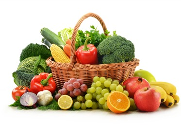
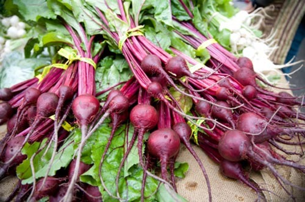
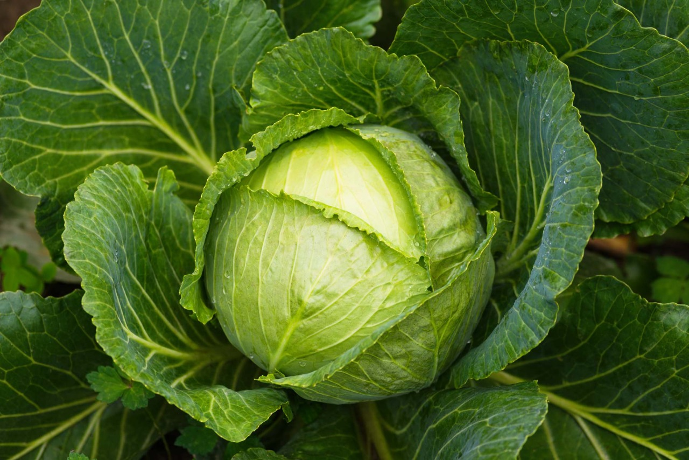
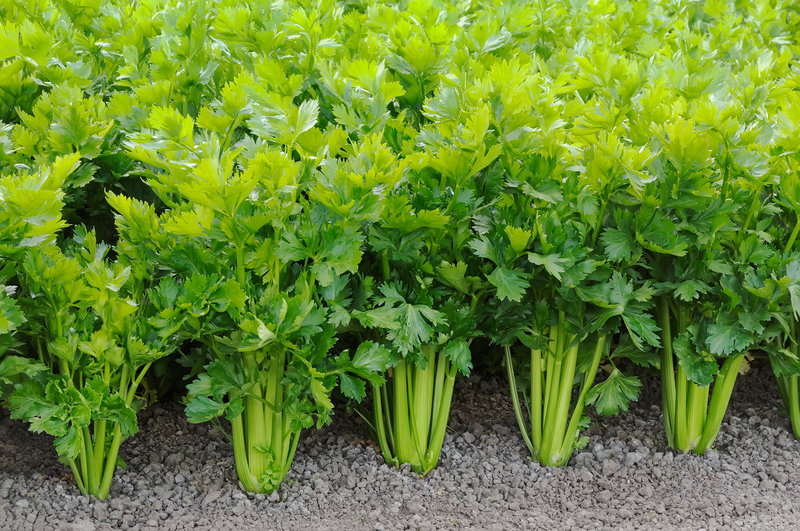
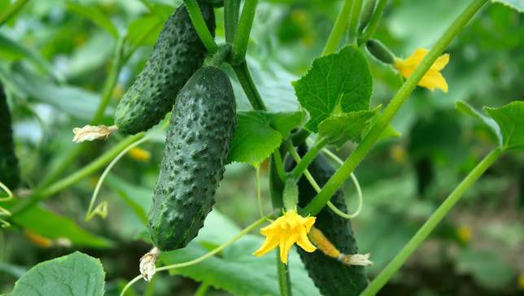
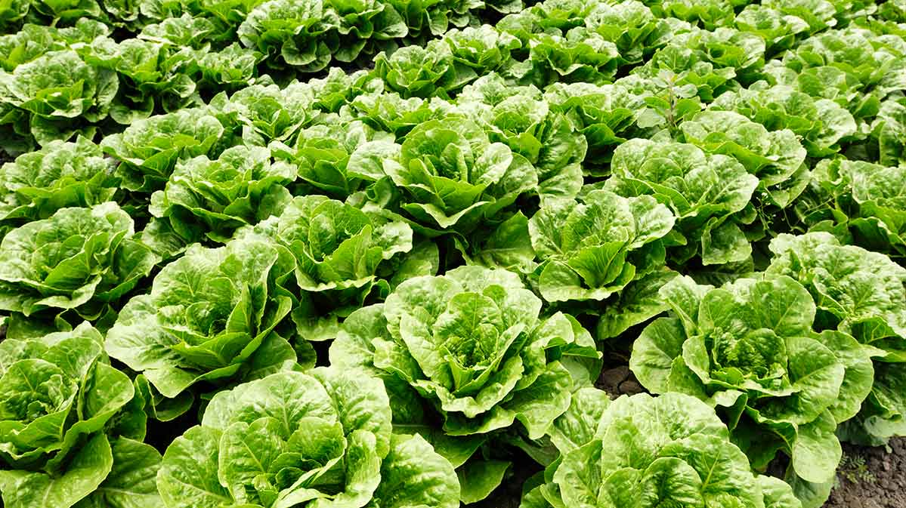

beetgreen
Beetroots are one of the most popular winter vegetables, known for their incredible health benefits and slimming properties. The bright red or purple root vegetable is deep red or purple in colour and is known to be great for eye health and detoxification. Beetroot is great for fighting inflammation and detoxifying the system. Moreover, beetroot boosts heart health by regulating blood pressure and improving blood flow.

Cabbage
Cabbage heads generally range from 0.5 to 4 kilograms (1 to 9 lb), and can be green, purple or white. Smooth-leafed, firm-headed green cabbages are the most common. Smooth-leafed purple cabbages and crinkle-leafed savoy cabbages of both colors are rarer. Under conditions of long sunny days, such as those found at high northern latitudes in summer, cabbages can grow quite large. As of 2012, the heaviest cabbage was 62.71 kilograms (138.25 lb).

Celery
The plants are raised from seed, sown either in a hot bed or in the open garden according to the season of the year, and, after one or two thinnings and transplantings, they are, on attaining a height of 15–20 cm (5.9–7.9 in), planted out in deep trenches for convenience of blanching, which is effected by earthing up to exclude light from the stems.

cucumber
The cucumber is a creeping vine that roots in the ground and grows up trellises or other supporting frames, wrapping around supports with thin, spiraling tendrils. The plant may also root in a soilless medium and will sprawl along the ground if it does not have supports. The vine has large leaves that form a canopy over the fruits.

lettuce
Lettuce's native range spreads from the Mediterranean to Siberia, although it has been transported to almost all areas of the world. Plants generally have a height and spread of 15 to 30 cm (6 to 12 in). The leaves are colorful, mainly in the green and red color spectrums, with some variegated varieties.